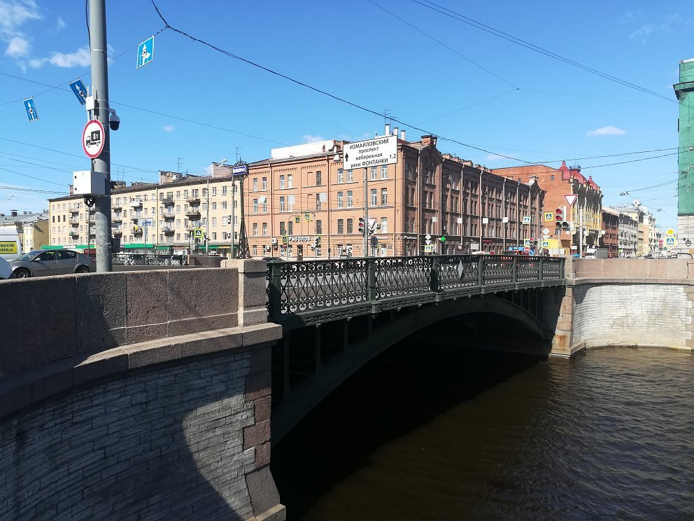
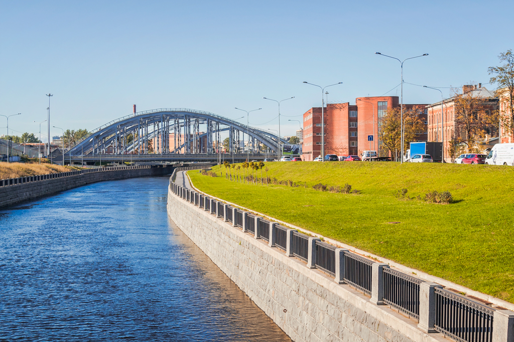
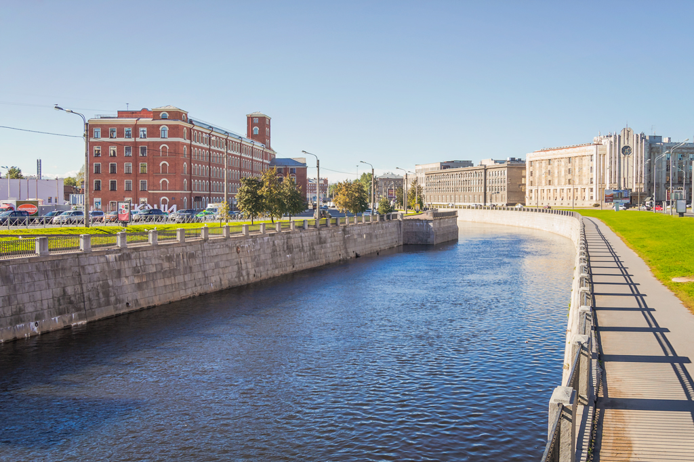
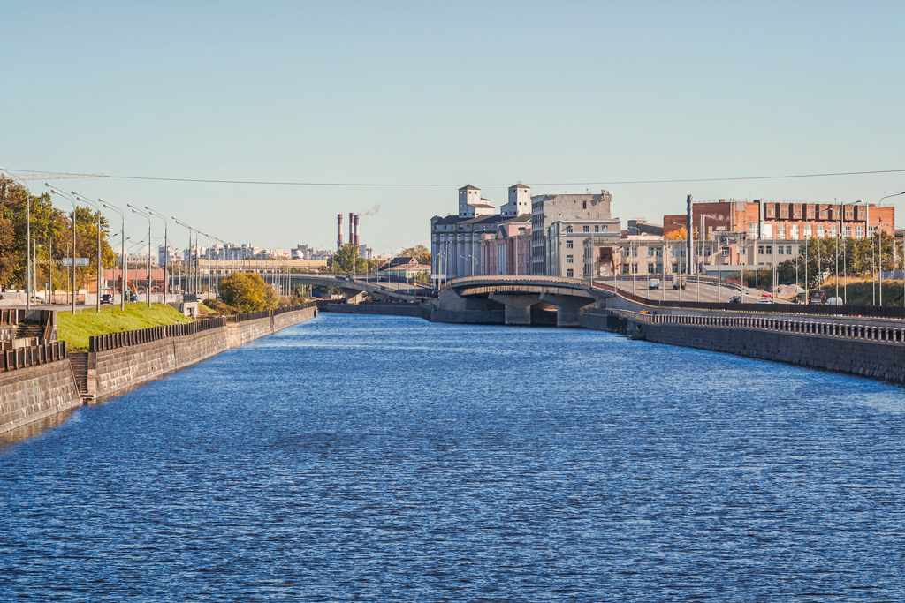

Обводный канал

Легенда
Обводный канал пользуется дурной славой «канала самоубийц». Легенда гласит, что в 1923 году при прокладке теплотрассы рабочие вскрыли древнее капище с плитами, испещренными знаками.

Несмотря на протесты археологов, плиты пустили на изготовление поребриков. После этого в районе Боровского моста начались массовые прыжки людей в воду без видимых причин.

Считается, что проклятие «просыпается» каждое десятилетие (в годы, оканчивающиеся на 3).
Что было на самом деле
Строительство канала велось с 1769 по 1833 год, он был южной границей города. Район исторически был промышленным, депрессивным и экологически неблагополучным, что объективно могло влиять на психологическое состояние людей.

Действительно, в 1923 году здесь находили гранитные плиты, которые могли быть частью старых захоронений. Однако статистика «всплесков» самоубийц именно в этом месте часто преувеличена городскими гидами, хотя дурная репутация за районом закрепилась прочно.
← Назад к карте